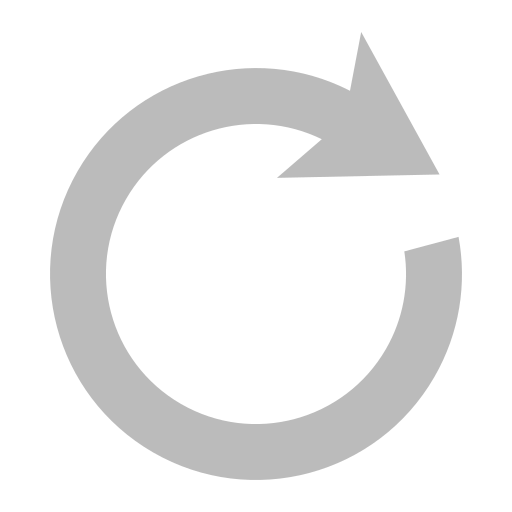

<div class="countdown-container">
  <div *ngIf="!editMode" (click)="toggleEditMode()" class="countdownTimer">{{ countdownTime }}</div>
  <div *ngIf="editMode" class="countdownTimer">
    <input type="text" [(ngModel)]="userInputTime" (focusout)="applyUserInputTime()" class="inputCountdownTimer"/>
  </div>
  <div class="warning-container">
    <div *ngIf="!editModeWarning" (click)="toggleEditModeWarning()" class="warningTimer">{{ warningTime }}</div>
    <div *ngIf="editModeWarning" class="warningTimer">
      <input type="text" [(ngModel)]="userInputWarningTime" (focusout)="applyUserInputWarningTime()"  class="inputWarningTimer"/>
    </div>
    <div (click)="showWarningTimer()" class="warningTimer">
      
    </div>
    <div (click)="showWarningTimer()" class="warningTimer" >
      
    </div>
  </div>
  <div class="progress-container">
    <!-- 一般计时器的进度条 -->
    <div class="progress-bar" [style.width.%]="normalTimeProgress"></div>
    <!-- Warning Time 计时器的进度条 -->
    <div class="progress-bar-yellow" [style.width.%]="warningTimeProgress"></div>

    <div class="arrow" [style.left.%]="arrowPosition"></div>
  </div>
  <div class="buttons">
    
    
    
    
    
  </div>
</div>


<!-- Warning Timer-->
<div class="slide-up" *ngIf="warningTimerVisible">
  <div class="warning-timer-container">
    <p class="subtitle">Get all 3 Warning Times!</p>
    <p class="time">01:15</p>
    <div class="progress-container">
      <!-- 绿色进度条 -->
      <div class="progress-bar"></div>
      <!-- 黄色进度条 -->
      <div class="progress-bar-yellow"></div>
      <!-- 橙色进度条 -->
      <div class="progress-bar-orange"></div>
      <!-- 红色进度条 -->
      <div class="progress-bar-red"></div>

      <!-- 箭头 -->
      <div class="arrow" [style.left.%]="arrowPosition"></div>
    </div>

    <div class="buttons">
      <!-- Restore 按钮 -->
      <button class="restore-button">restore</button>

      <!-- Upgrade 按钮 -->
      <button class="upgrade-button">upgrade</button>
    </div>
    <button class="back" (click)="hide()">X</button>
  </div>
</div>

<!-- Info -->
<div class="slide-up" *ngIf="infoVisible">
  <div class="content-container">
    <div class="title">about</div>
    <button class="close" (click)=" hide()">X</button>
    <div class="content">Speech timer is used in talks, speeches,</div>
    <div class="content">debates or anything that needs a polite</div>
    <div class="content">reminder to remain on time!</div>
    <div class="content"></div>
    <div class="content">Includes time line, overtime (15minutes),</div>
    <div class="content">count up & down, 3 times formats and up to 3</div>
    <div class="content">warn times!</div>
    <div class="infoButtons">
      <button class="rate-button">rate us!</button>
      <button class="app-button">more apps</button>
    </div>
  </div>
</div>

<!-- Share-->
<div class="slide-up" *ngIf="shareVisible">
  <div class="content-container">
    <div class="title">share</div> 
    <button class="close" (click)="hide()">X</button>
    <div class="tagContent">
      <div class="tag-text">{{ selectedTagText }}</div>
    </div>
    <div class="tagButtonContent">
      <div class="tag-button" *ngFor="let tag of tags; let i = index" (click)="selectTag(i)">{{ tag }}</div>
    </div>
  </div>
</div>

